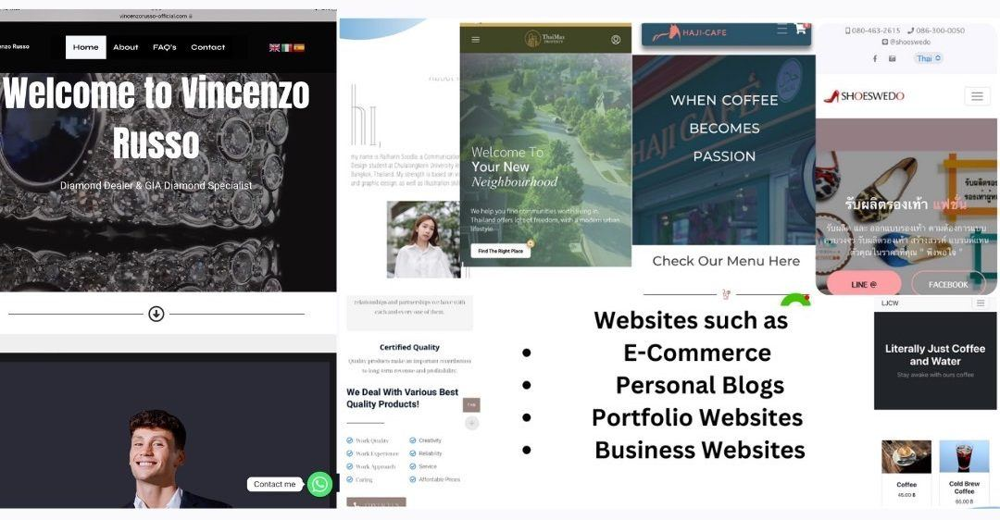

WebsiteVincenzo Russo — Personal Brand & Blog Website
A modern blog website reflecting his personal brand and expertise in gemstones and fine jewellery.
- Client
- Vincenzo Russo, gemstone & fine jewellery expert
- Challenge
- Create a professional online home for his insights and stories that reinforces his credibility as a trusted voice in gems and jewels.
- Solution
- A clean, elegant, content-focused site that makes articles easy to publish and discover — built for SEO, speed and every device.
- Outcome
- A platform that can grow alongside his brand and audience, with a polished presence that builds trust.
Website Design & DevelopmentUI/UX Design
Website
Vincenzo Russo — Personal Brand & Blog Website
A modern blog website reflecting his personal brand and expertise in gemstones and fine jewellery.
- Client
- Vincenzo Russo, gemstone & fine jewellery expert
- Challenge
- Create a professional online home for his insights and stories that reinforces his credibility as a trusted voice in gems and jewels.
- Solution
- A clean, elegant, content-focused site that makes articles easy to publish and discover — built for SEO, speed and every device.
- Outcome
- A platform that can grow alongside his brand and audience, with a polished presence that builds trust.
Services provided
- Website Design & Development
- UI/UX Design
- Responsive Development
- Blog & Content Management
- SEO-Friendly Website Structure
- Performance Optimization
- Brand-Focused Visual Design